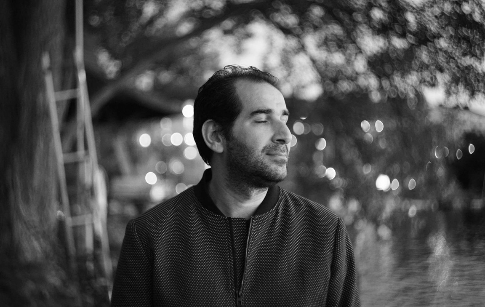

Kurdish Art
Savaş Boyraz
The State We Are In / Crane Work
2016 – 2019
Destruction and construction are two sides of the same coin that spin endlessly on
colonised landscapes. When the clashes end, tanks pull out, construction machines move in.
For Gever lies next to a wetland that has been drained by the authorities, migratory cranes
are no longer around. Only the machines...
Video Projection on Wallpaper, with sound.
3 mins loop

About the Artist
Savaş Boyraz (born in 1980, Istanbul) is based in Stockholm. He was part of Mezopotamya
Cinema Collective between 1998 and 2006 in Istanbul. He graduated from the Photography
Department of Mimar Sinan Fine Arts University, Istanbul in 2009. He received his degree
in Fine Arts in Art in Public Realm from the Master Program at Konstfack, Stockholm, in
2012.
He has been selected by Lausanne Photography Museum for the reGeneration2 exhibitions and
book in 2010. With his Master graduation work "Invisible Landscapes" he was awarded with
Victor Fellowship by Hasselblad Foundation, and took part in New Nordic Photography
exhibition in 2013. In 2016, Boyraz worked with Bergen University College, Norway, and
produced documentary and fiction films as a part of research projects in social sciences.
Since 2021, he is pursuing a PhD in artistic research, at the Department of Film and Media
at Stockholm University of Arts.